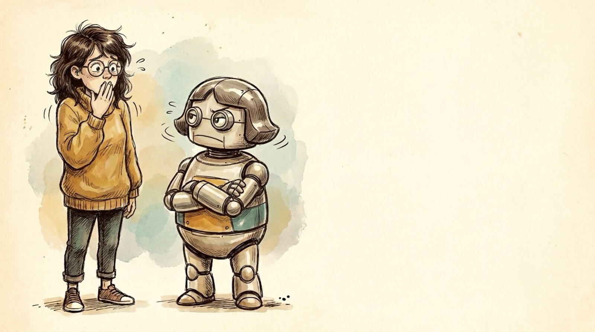

<section id="w01" data-transition="fade" style="background:#f5eee0">
  
  <h1 id="pecce8edaaf2er0-4d833f2a" style="position:absolute; top:58.48px; left:890.47px; width:1920px; font-family:Arial, sans-serif; font-size:84px; font-weight:700; line-height:1.1; color:#222222">What I got wrong</h1>
  <ul id="pecce8edaaf2er1-4d833f2a" style="position:absolute; top:199.99px; left:972.23px; width:1920px; font-family:Arial, sans-serif; font-size:56px; line-height:1.5; color:#222222">
    <li>Most changes don't deserve review</li>
    <li>Ideas are expensive</li>
    <li>Clauding is faster than thinking</li>
  </ul>
  <aside>So what did I get wrong? Three things. The June plan: build a pipeline so non-engineers can make changes and get them reviewed. (1) Most software is internal or the change is minor, so nobody cares and any engineering review is too much. (2) Reviewing other people's ideas is still expensive. (3) Execution got faster than you can think.</aside>
</section>
